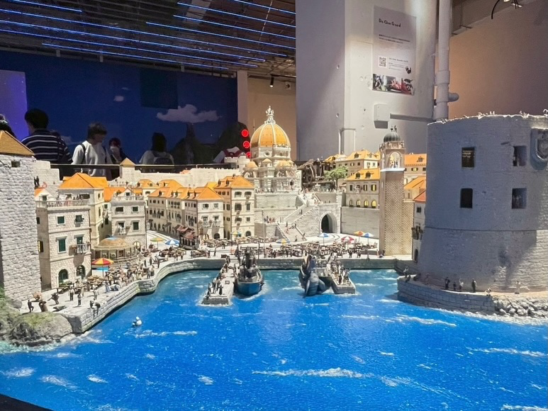
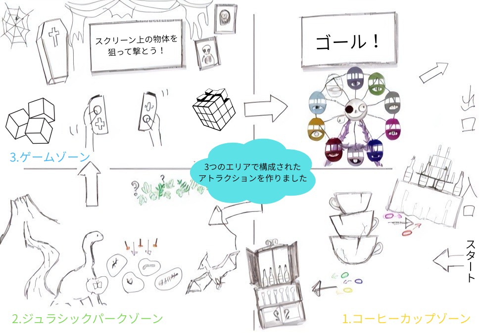
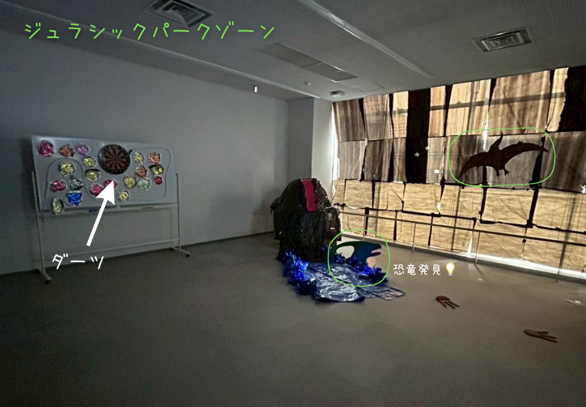
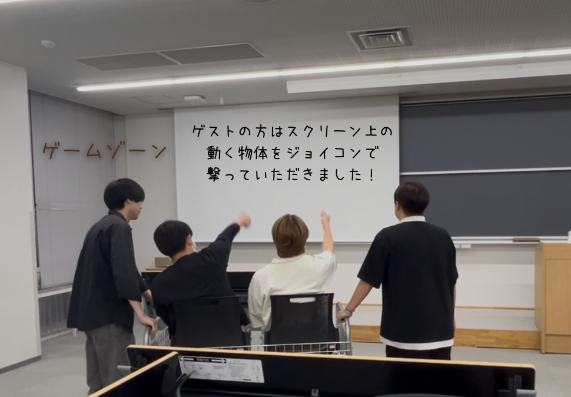
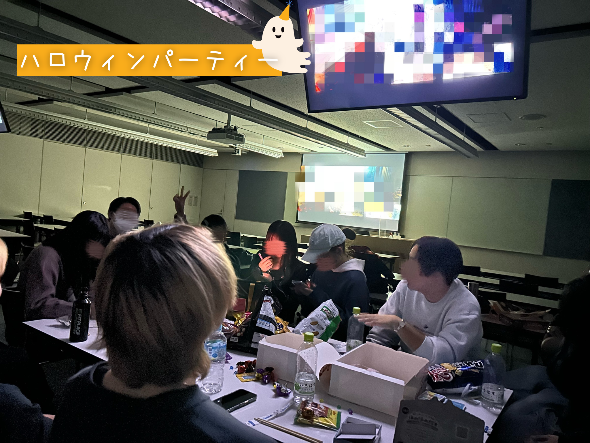
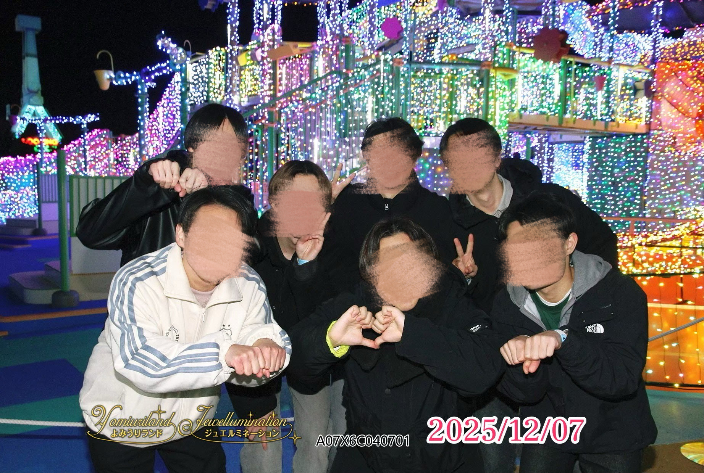
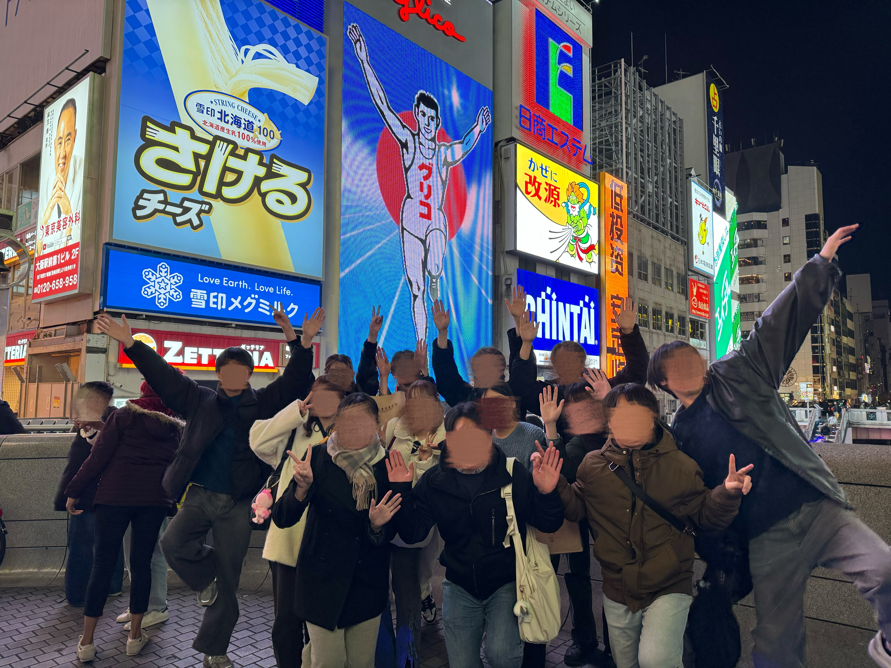
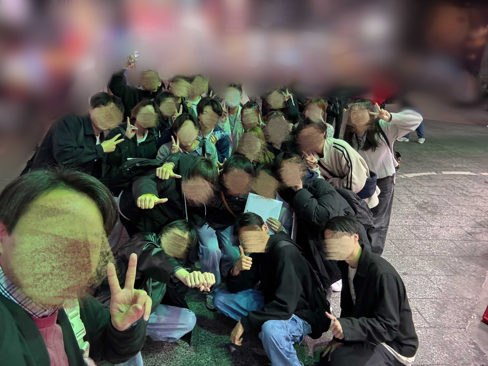

2025年度活動紹介
現在レイアウト調整中!
7月

・現地調査（東京ドームシティアトラクションズ）
新学期入って初のテーマパーク！初めての本格的な活動参加で緊張するかもしれませんが、サークルの人と一緒に回ることで一気に仲良くなるチャンスでもあります！
・勉強会
みんなで集まって試験勉強をしました。分からないところは直接先輩に聞くこともできますよ！
8月

・スモールワールズ
小さな世界観の演出の仕方を学びました。

・BBQ
夏といえばBBQ！たくさん笑って、みんなでおいしいお肉をいただきました♪
10月






・文化祭（駿河台桜理祭）
現地調査を活かしたオリジナルアトラクションを制作しました！1ヶ月以上の準備期間を経て3つのゾーンを完成させました。またチュロス販売もしました。

ハロウィンパーティー
みんなでお菓子を持ち寄り、カードゲームや映画鑑賞をしました！
11月

・ボードゲーム会
2回開催しました。ゲームを通して参加者の新たな一面が見られたりしました。とてもおもしろいかったです！
12月


・現地調査（よみうりランド）
このサークルは遊園地にも行きます！よみうりランドはアトラクションだけでなく、イルミネーションやＨＡＮＡ・ＢＩＹＯＲＩといった幻想的な空間があり、この魅せ方も大きな学びになりました。
3月


・合宿（ＵＳＪ）
2025年度最後の現地調査はＵＳＪ！関西にも足を運びました。ＵＳＪはアニメやゲームの世界観が特徴的でした。2泊3日の合宿なので、京都や大阪の観光もしました♪

・送別会
卒業される4年生の方に今までの感謝と応援の気持ちを伝えました。